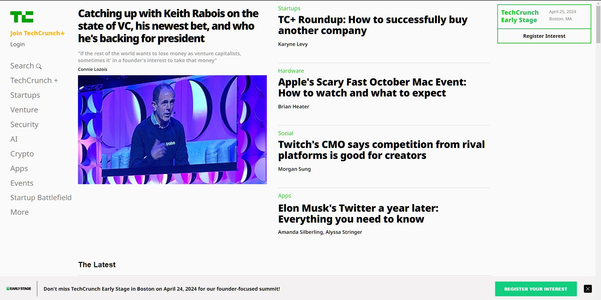

TechCrunch Blog Website Clone
The idea that I got behind starting this project as a way to practice my HTML and CSS skills further got simple from googling "best blog websites to practice html and css" and I think I remember that this website got recommended first. Fact is the Project is uploaded to GitHub but it's not yet complete finished. I hope to return one day to finish the project. Main purpose of this project is like I said to expand my knowledge and practice of Web Development.
